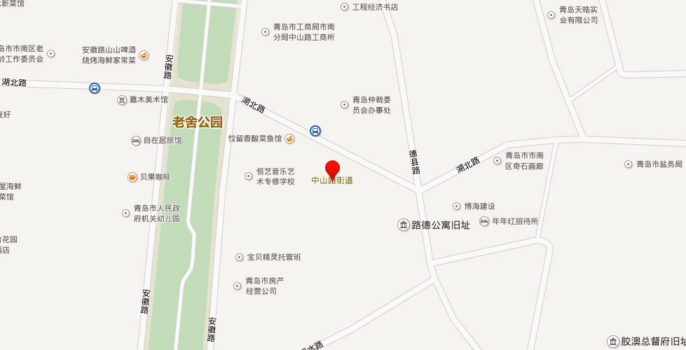

【地址】青岛市市南区湖北路2号
2004年5月4日，中山路街道与观海路街道合署为中山路街道，办公地址为湖北路2号。位于市南区中西部，面积1.74平方千米。2005年末，辖10个社区，常住人口5.7万余人，流动人口8000余人。
【中山路街道】辖4个社区。［沿革］1954年设立中山路街道、泰安路街道。1996年， 中山路街道面积0.5平方千米，人口1.9万人，辖潍县路、大沽路、天津路、北京路、山西路、河南路、河北路、江宁路、中山路南段、中山路北段、济南路东段、济南路西段12个居委会；泰安路街道面积0.6平方千米，人口2.1万人，辖河南路、河南路第二、宁阳路、泗肥路、单县路、湖北路、费县路、湖南路、太平路、中山路南端、中山路北端11个居委会。1999年末，泰安路街道和中山路街道部分辖区合并设立新的中山路街道；原中山路街道办事处的全体人员统一调到金湖路街道办事处，原泰安路街道办事处的全体人员接管老中山路街道办事处的管辖区域。［2011年代码及城乡分类］370202005：～001 111泰安路社区 ～002 111北京路社区 ～004 111中山路社区 ～007 111太平路社区
【观海路街道】辖2个社区。［沿革】1949年，观海路街道曾与四方路街道并存分管，1958年四方路街道并于观海路街道。1996年，观海路街道面积0.6平方千米，人口2万人，辖观海一路、观海二路、平原路、沂水路、湖南路、广西路、安徽路、德县路、平度路、黄岛路、四方路、芝罘路、济宁路13个居委会。［2011年代码及城乡分类］370202006：～002 111观海山社区 ～005 111黄岛路社区
【单县路社区】位于中山路街道西南部，南到太平路，北至湖北路，东到中山路，西至朝城路。所属路段：广西路58-80号；兰山路2-28、5-41号；河南路2-10号；太平路39-77号；鱼台路1-19号；费县路6-44号；单县路1-39、8-30号；朝城路3-13号；广州路52-66、91-107号；郯城路1号。2005年末，人口1770户5481人，居民小组40个。居委会驻费县路32号。
【浙江路社区】位于中山路辖区中西部，东起老舍公园，西至火车站，南起栈桥，北至湖北路。所属路段：湖北路1-3、2-98号；太平路37号；费县路1号；兰山路1号；德县路3-17、6-12号；蒙阴路1-11号；新泰安路27号；浙江路1-11、2-20号；中山路1-33、6-36号；河南路12-24、5号；广西路21-61、28-44号；安徽路2-16、13-19号；湖南路28-72、29-55号。面积0.4平方千米。2005年末，人口2123户6280人，居民小组72个。居委会驻浙江路11号。
【广西路社区】2001年4月，广西路、沂水路2个居委会合并为广西路社区。位于中山路街道东南部。所属路段：青岛路1-2号；莒县路1-7、2-6号；江苏路2-14号；太平路29-33号；湖南路9-25号；湖北路2-2号丙；德县路1、2、4号；沂水路1-11、2-14号；明水路1、2、4号；安徽路2号甲-11号丁；广西路1-13、14-26号；日照路1、2、4号。面积0.15平方千米。2005年末，居民1462户4513人，居民小组28个。居委会驻德县路2号。
【湖北路社区】居委会成立于1954年。2001年，泗水路、宁阳路、湖北路3个居委会合并为湖北路社区。地处青岛老城区，东起安徽路，南到湖北路，西至泰安路，北到肥城路。所属路段：寿康路2号；泗水路2-20号；肥城路2-44号；湖北路5-37号；新泰路1-17号、2-28号；安徽路20-22号；河南路26-42号；宁阳路1-25号、6-26号；曲阜路6-46号、3-17号；中山路44-70号、35-75号；泰安路9-29号、14-32号；浙江路22-24号、13-17号。面积0.28平方千米。2005年末，常住人口2155户5506人。居委会驻泗水路2号。
【观海山社区】因辖区内有观海山而得名。位于中山路街道中东部。所属路段：黄岛路2-6、1-21号；芝罘路25-47号；四方路1号、2-10号；观海一路1-39、2-34号；济宁路2-30、5-31号；安徽路40-42号、27-39号；济宁支路1-31号、2-34号；平原路2-76号、25-61号；观海二路1-77号、2-12号。2005年末，人口2617户9756人，居民小组110个。居委会驻观海一路10号。
【河南路社区】位于中山路街道中西部，地处肥城路以北、泰安路以东、天津路以南。所属路段：河北路2-16号；大沽路21-35、2-98号；肥城路13-61号；保定路25-33号；河南路19-45、44-84号；天津路18-52号；中山路70-74号。面积0.38平方千米。2005年末，人口1750户4720人。居委会驻天津路44号。
【平度路社区】位于中山路街道西北部，南到曲阜路，北到四方路，东到安徽路，西到易州路。所属路段：平度路1-67、2-46号；芝罘路1-23、2-50号；易州路1-9号；四方路12-38、3-41号；黄岛路8-92、23-73号；曲阜路1、2-4号；安徽路26-36、23-25号；德县路23-27、12-14号。2005年末，人口2290户6891人，居民小组66个。居委会驻德县路23号甲。
【中山路社区】2004年7月，原观海路街道的潍县路社区与原中山路街道的河南路社区、中山路社区各一部分，合并为中山路社区。位于中山路辖区中部。所属路段：博山路1-15号、2-46号；大沽路3-11号；四方路43-81号、40-72号；潍县路1-35号、2-22号；河北路1-19号；中山路77-133号、76-144号；德县路31-47号、18-32号；天津路2-14号；肥城路1-11号丁、2-2号丙；保定路3-23号甲、2-18号。2005年末，人口1850户5560人，居民小组52个。居委会驻潍县路19号。
【天津路社区】2004年8月，原中山路社区的一部分和原天津路社区合并为天津路社区。位于中山路辖区西北部。所属路段：山西路1-13号、2-28号；北京路2-88号；天津路1-67号；河北路23-35号、16-38号；河南路86-98号、53号；济南路93-99号；中山路146-188号、139-149号；江宁路2-64号、1-27号。2005年末，人口1560户5100人，居民小组38个。居委会驻天津路23号。
【济南路社区】位于中山路辖区西北部。所属路段：济南路1-91、2-68号；北京路1-89号；山西路17-23、28-32号；河北路45-65、44-62号；中山路196-200、163-181号；河南路100-124、55-79号。面积约0.3平方千米。2005年末，人口1846户4495人。居委会驻河南路116号。